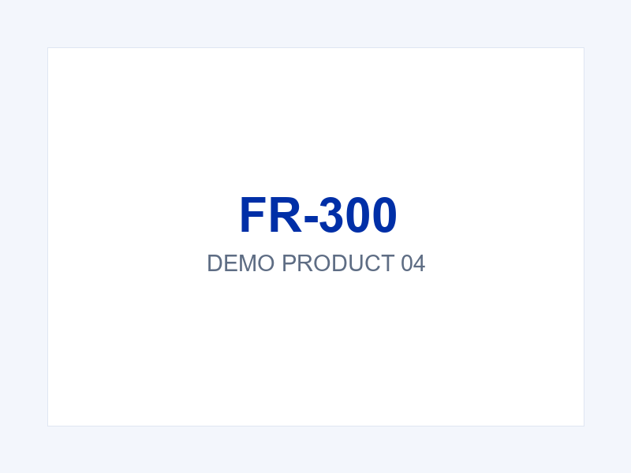

← All products

Reader Series
Fixed UHF RFID Reader
Model: FR-300
Fixed UHF RFID reader for warehouse gates and production lines.
Key features
- Octa-core processor, 4 GB RAM + 64 GB storage
- Industrial protection rating, dust and water resistant
- Optional barcode scanning, RFID and fingerprint modules
Typical applications
Warehousing, logistics, manufacturing and field service.
- Octa-core processor, 4 GB RAM + 64 GB storage
- Industrial protection rating, dust and water resistant
- Optional barcode scanning, RFID and fingerprint modules
Typical applications
Warehousing, logistics, manufacturing and field service.